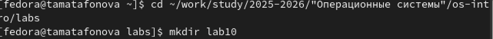
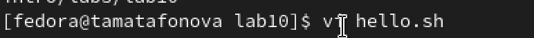
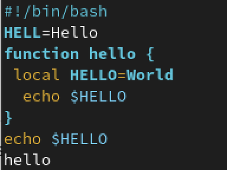
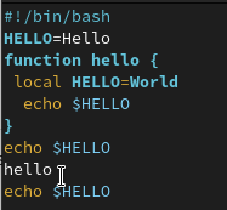
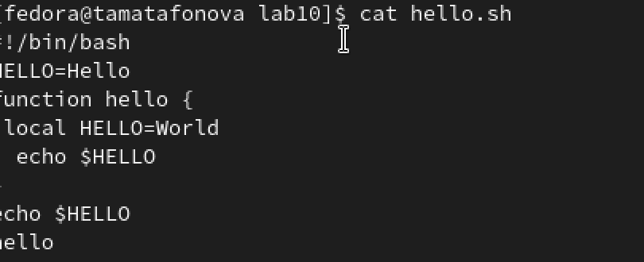

Настройка рабочей среды
Автор: Матафонова Таисия Антоновнв Преподаватель: Кулябов Дмитрий Сергеевич профессор * профессор кафедры теории вероятностей и кибербезопасности * Российский университет дружбы народов им. П. Лумумбы * kulyabov-ds@rudn.ru * https://yamadharma.github.io/ru/
Информация о докладчике
Студентка НБИбд-01-25
Цель работы
Познакомиться с операционной системой Linux. Получить практические навыки рабо- ты с редактором vi, установленным по умолчанию практически во всех дистрибутивах.
Выполнение лабораторной работы
1.Создала каталог lab10 и перешла в него

2.Открыла редактор vi и создала файл hello.sh, ввела в него текст программы

3.Выполнила замену HELL на HELLO и удаление LOCAL с заменой на local

4.Добавила новую строку echo $HELLO в конец файла, затем удалила её и вернула обратно командой u

5.Просмотрела содержимое готового файла командой cat hello.sh

#Контрольные вопросы
Вопрос 1. Дайте краткую характеристику режимам работы редактора vi.
Редактор vi имеет три режима работы. Командный режим предназначен для ввода команд редактирования и навигации по редактируемому файлу. Режим вставки предназначен для ввода содержания редактируемого файла. Режим последней строки (или командной строки) используется для записи изменений в файл и выхода из редактора.
Вопрос 2. Как выйти из редактора, не сохраняя произведённые изменения?
Чтобы выйти из редактора без сохранения изменений, необходимо находясь в командном режиме нажать клавишу Esc, затем нажать двоеточие, набрать символы q! и нажать Enter.
Вопрос 3. Назовите и дайте краткую характеристику командам позиционирования.
Команда 0 (ноль) осуществляет переход в начало строки. Команда $ осуществляет переход в конец строки. Команда G осуществляет переход в конец файла. Команда n G осуществляет переход на строку с номером n. Также существует команда gg для перехода в начало файла.
Вопрос 4. Что для редактора vi является словом?
Словом для редактора vi считается последовательность букв, цифр и символов подчёркивания, ограниченная пробелами, табуляцией, знаками пунктуации или началом и концом строки. При использовании прописных команд W и B под разделителями понимаются только пробел, табуляция и возврат каретки. При использовании строчных w и b под разделителями понимаются также любые знаки пунктуации.
Вопрос 5. Каким образом из любого места редактируемого файла перейти в начало (конец) файла?
Для перехода в начало файла из любого места необходимо нажать клавиши gg (дважды g) или ввести команду 1G. Для перехода в конец файла необходимо нажать клавишу G (большую букву).
Вопрос 6. Назовите и дайте краткую характеристику основным группам команд редактирования.
Основные группы команд редактирования включают: команды вставки текста (i - вставка перед курсором, a - вставка после курсора, I - вставка в начало строки, A - вставка в конец строки, o - вставка строки под курсором, O - вставка строки над курсором); команды удаления (x - удаление символа, dw - удаление слова, dd - удаление строки, d$ - удаление от курсора до конца строки); команды копирования и вставки (yy или Y - копирование строки, yw - копирование слова, p - вставка из буфера после курсора, P - вставка из буфера перед курсором); команды отмены и повтора (u - отмена последнего действия, . - повтор последнего действия); команды замены (cw - замена слова, r - замена одного символа, R - замена нескольких символов в режиме замены).
Вопрос 7. Необходимо заполнить строку символами $. Каковы ваши действия?
Необходимо в командном режиме установить курсор в начало строки с помощью команды 0, затем нажать клавишу R для перехода в режим замены, после чего нажать клавишу $ столько раз, сколько символов нужно заменить. Также можно использовать команду r$ для замены одного символа на знак доллара.
Вопрос 8. Как отменить некорректное действие, связанное с процессом редактирования?
Для отмены некорректного действия необходимо нажать клавишу u в командном режиме. Каждое нажатие u отменяет одно предыдущее действие. Для повтора последнего действия используется клавиша . (точка).
Вопрос 9. Назовите и дайте характеристику основным группам команд режима последней строки.
Команды записи и выхода: :w - сохранить файл, :w имя_файла - сохранить в новый файл, :q - выйти из редактора, :q! - выйти без сохранения, :wq - сохранить и выйти, :e! - отменить все изменения после последнего сохранения. Команды работы со строками: :n,m d - удалить строки с n по m, :n,m t k - скопировать строки с n по m в строку k, :n,m m k - переместить строки с n по m в строку k.
Вопрос 10. Как определить, не перемещая курсора, позицию, в которой заканчивается строка?
Для определения позиции конца строки без перемещения курсора необходимо в режиме последней строки ввести команду :set list. При этом конец каждой строки будет отображаться символом $. Для отключения этой опции используется команда :set nolist.
Вопрос 11. Выполните анализ опций редактора vi (сколько их, как узнать их назначение и т.д.).
Для вывода полного списка опций редактора vi используется команда :set all. Основные опции включают: :set nu - вывод номеров строк, :set nonu - отключение номеров строк, :set list - показ невидимых символов (конец строки обозначается $, табуляция обозначается ^I), :set nolist - отключение показа невидимых символов, :set ic - игнорирование регистра при поиске, :set noic - учёт регистра при поиске, :set autoindent - автоматический отступ, :set tabstop=n - установка ширины табуляции в n пробелов. Чтобы отказаться от использования опции, в команде set перед именем опции ставится no.
Вопрос 12. Как определить режим работы редактора vi?
Режим работы редактора vi можно определить по нижней строке экрана. В режиме вставки внизу экрана отображается надпись “– ВСТАВКА –” или “– INSERT –”. В режиме последней строки внизу экрана появляется двоеточие. В командном режиме внизу экрана нет никаких дополнительных надписей.
Вопрос 13. Постройте граф взаимосвязи режимов работы редактора vi.
Из командного режима можно перейти в режим вставки с помощью клавиш i, a, o, I, A, O. Из режима вставки возврат в командный режим осуществляется нажатием клавиши Esc. Из командного режима можно перейти в режим последней строки с помощью нажатия двоеточия. Из режима последней строки после выполнения команды и нажатия Enter происходит возврат в командный режим. Таким образом, командный режим является центральным, а режим вставки и режим последней строки являются подчинёнными по отношению к нему.
Выводы
В ходе выполнения лабораторной работы я познакомилась с операционной системой Linux и получила практические навыки работы с текстовым редактором vi.
Я изучила три режима работы редактора: командный режим (для навигации и команд), режим вставки (для ввода текста) и режим последней строки (для сохранения и выхода). Научилась создавать новый файл командой vi hello.sh, вводить текст, сохранять изменения (:wq) и выходить без сохранения (:q!).
Выполнила основные команды редактирования: замену символов, удаление слов (dw), добавление строк (o), удаление строк (dd), отмену действий (u). Также научилась перемещаться по файлу с помощью команд G (конец файла) и 0, $ (начало и конец строки).
В результате был создан и отредактирован bash-скрипт hello.sh, который выводит на экран строки “Hello”, “World” и “Hello”. Работа с редактором vi освоена, все поставленные задачи выполнены.
Список литературы
ТУИС. Архитектура компьютеров и операционные системы. Раздел “Операционные системы”. Лабораторная работа №9.